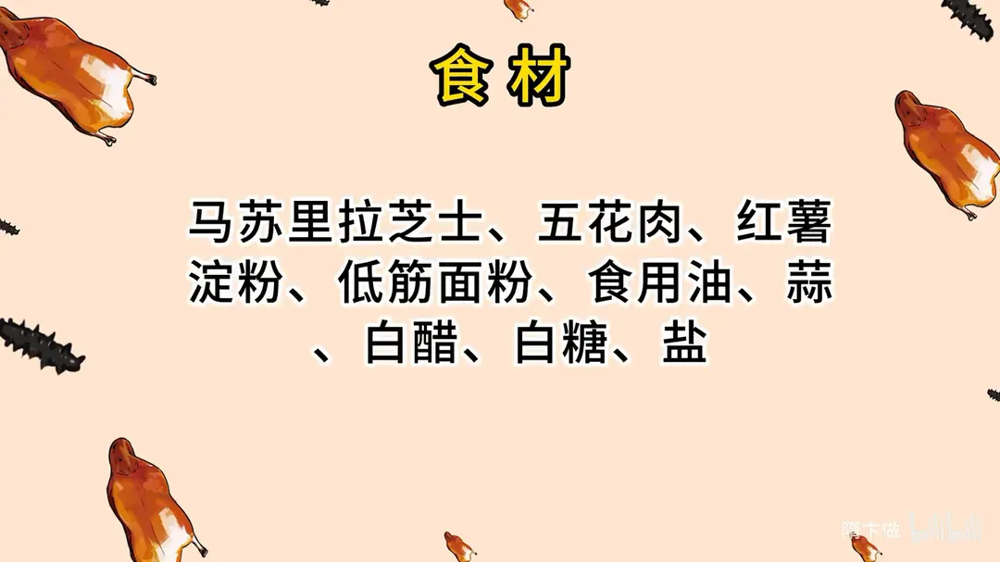
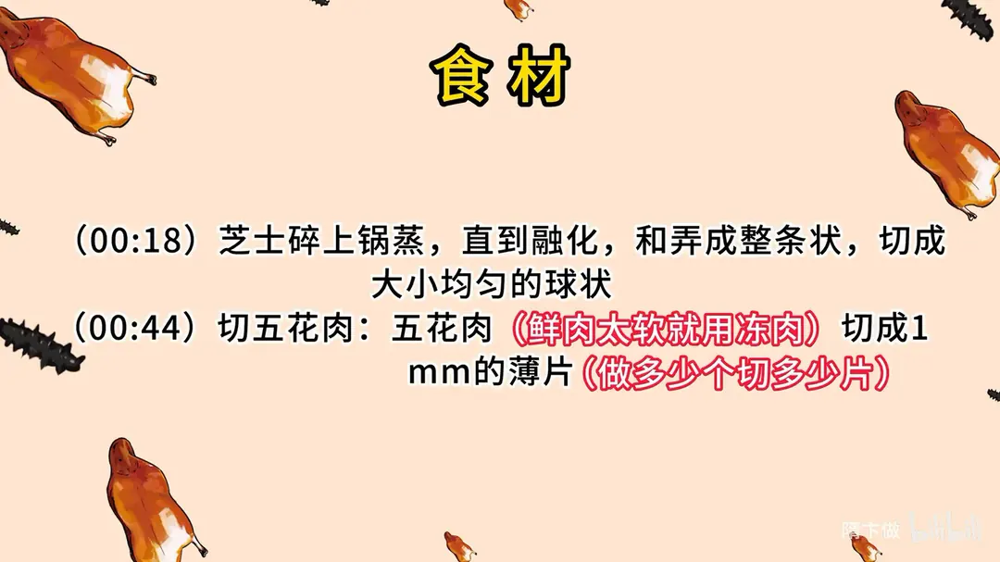
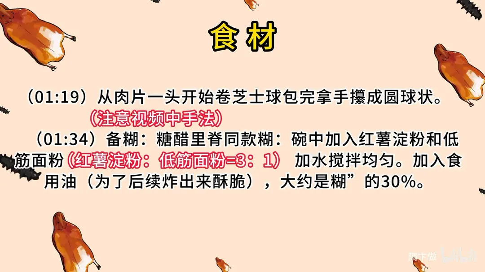
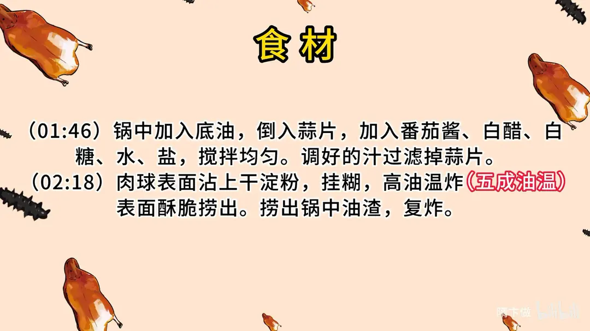
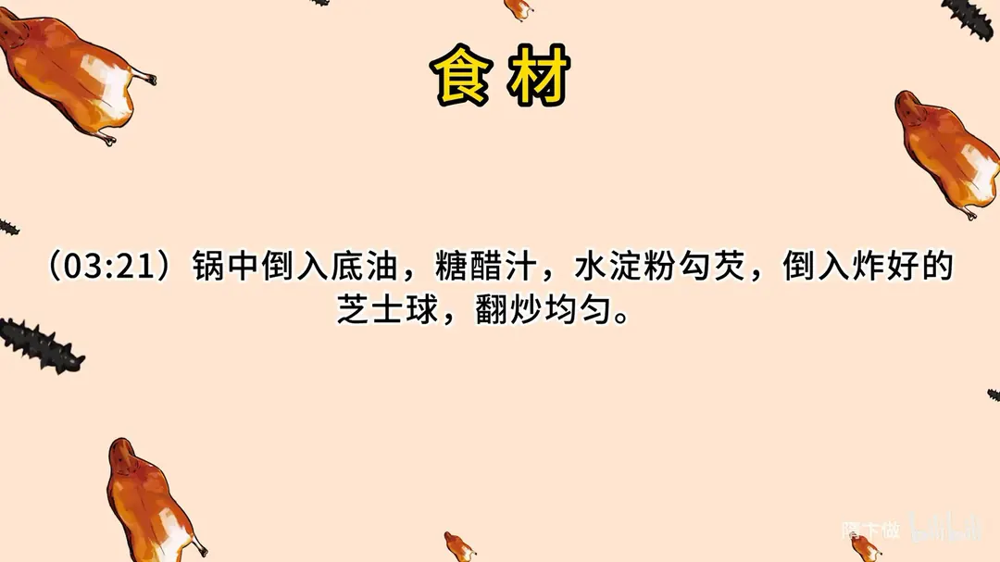

芝士菠萝咕咾肉
隋卞一做。把蒸融的芝士球包进 1mm 五花肉片，挂红薯淀粉与低筋面粉 3:1 的糊，五成油温炸酥，再裹糖醋汁。
原视频：https://www.bilibili.com/video/BV1cN411k7dN
食材
马苏里拉芝士、五花肉、红薯淀粉 等 9 样
| 类别 | 用料 | 用量 |
|---|---|---|
| 主料 | 马苏里拉芝士 | 适量 |
| 主料 | 五花肉 | 适量 |
| 辅料 | 红薯淀粉 | 适量 |
| 辅料 | 低筋面粉 | 适量 |
| 调料 | 食用油 | 适量 |
| 调料 | 蒜 | 适量 |
| 调料 | 白醋 | 适量 |
| 调料 | 白糖 | 适量 |
| 调料 | 盐 | 适量 |
步骤
- 蒸芝士：芝士碎上锅蒸，直到融化，和成整条状，切成大小均匀的球状。
- 切肉片：五花肉（鲜肉太软就用冻肉）切成 1mm 的薄片，做多少个切多少片。
- 卷芝士球：从肉片一头开始卷芝士球，包完拿手攥成圆球状。
- 备糊：碗中加入红薯淀粉和低筋面粉（红薯淀粉：低筋面粉 = 3：1），加水搅拌均匀；再加入食用油，大约为糊的 30%，为了后续炸出来酥脆。
- 调糖醋汁：锅中加入底油，倒入蒜片，加入番茄酱、白醋、白糖、水、盐，搅拌均匀；调好的汁过滤掉蒜片。
- 挂糊炸制：肉球表面沾上干淀粉，挂糊，高油温（五成油温）炸，表面酥脆捞出；捞出锅中油渣，复炸。
- 裹汁：锅中倒入底油、糖醋汁，水淀粉勾芡，倒入炸好的芝士球，翻炒均匀。
讲解要点
难度：★★★☆☆（不难，难在肉片要切到 1mm、包球不漏，以及五成油温小火浸炸）
为什么这么做
- 选便宜的马苏里拉芝士碎：这道菜说的就是这种普通的碎芝士，熔了以后黏、能拉丝，包进肉里能成一整团；换别的芝士口感就不对。
- 芝士先蒸两分钟再搓球：冷的芝士碎是散的，搓不成球；蒸软后先黏成一团，才好切球、好包。
- 五花肉切成 1mm 薄片：要卷几层才刚够一个球的量，太厚包不圆，也太腻；鲜肉不好切就先冻一下。
- 卷完在手里攥成球：卷的时候有空隙，攥一下让肉层贴紧，炸的时候才不会散开、芝士才不会漏。
- 糊用红薯淀粉配低筋面粉、3:1：红薯淀粉炸出来脆硬挺，低筋面粉补一点柔韧和香气；再拌进约三成油，是「酥」的关键，油让糊层起酥不板结。
- 先拍干淀粉再挂糊：干淀粉把肉表面的水吸住，糊才挂得牢，不脱壳。
- 五成油温、小火慢炸：肉包了好几层，大火外面焦了里面还没熟；小火浸炸才能把肉炸透、把里面的油逼出来，壳才酥。
- 捞净油渣再复炸、大火升温：油渣会粘在球上发苦；高温复炸时间要短，只为逼油、催脆。
- 糖醋汁炒蒜片后过滤：蒜片只用来取香，留在汁里会发苦、影响成菜澄净。
容易翻车
- 肉球沾干淀粉别沾太多，太多了挂不上糊。
- 油温五成下锅，看到下锅后气泡冒得特别急，说明温度过高，要立刻关小火。
- 炸到球浮起来、表面金黄就够了，复炸时间一长肉就柴。
- 勾芡只加一点点水淀粉，汁太稠挂不匀、太稀裹不住。
- 裹汁要翻匀马上出锅，在锅里久待，外面的酥壳就被泡软了。
原片尾卡





原片文案
AI 字幕校准稿
给你们教一道新菜，这个也是我店里新上的菜，全网的教程肯定没有，因为这道菜是我研发的。在店里试了一段时间，大家伙给的评价都不错，这样才敢给大家做。
首先要用到芝士，就是很普通的马苏里拉芝士碎。不同的芝士有不同的口感，这道菜就这种便宜的芝士是最适合的。拿起来的时候它是碎状，放在蒸锅里蒸上两分钟，让它化一些，透过透明的小窗口能看见它软了、化掉了就可以了。搅匀了放在案板上，拿刀或者拿手给它切成小的圆球，放在旁边备用就可以了。
下一步就来切猪肉。对着五花肉的横截面拿刀蹭一下，让它保持平、呈一条直线，然后切成 1mm 厚的薄片，这个样子就可以了。我是用鲜肉切的，如果你觉得不好切，就把肉冻一下。切好的肉片拿刀抹平，从一头开始卷做好的芝士球，卷完之后拿手攥一下，让它变成一个圆球就可以了。
然后准备一个糖醋里脊同款的汁，比例也会放到视频的最后。锅里边放入底油，加点蒜片，蒜片炒香加入番茄酱，加入白醋、白糖、水，还有盐，调好的汁把蒜片过滤出来。
锅里边倒入干净油，肉球表面挂上干淀粉，有一点就行了，太多了待会儿挂糊挂不上。五成油温下锅炸。怎么判断该开大火还是关小火？看原料水花的变化：它冒泡冒得特别急了，温度就有点高，上色特别快，那就不行。因为我们五花肉包了很多层，需要小火慢炸，要把五花肉炸透；还有一个，咱们表面挂着一个糊，要慢慢地浸炸，表面的壳才能酥脆。炸到球飘上来了，基本上就熟了。把里面渣子捞一下，捞完以后大火升温，再次复炸，炸的时间不要太长。好了。
锅里边放底油，糖醋汁倒进去，水淀粉勾芡，一点点水淀粉，对，来点热油，倒入炸好的肉，全部都裹上汁就行了。好了，出锅。这个在我这是按位上的。
你尝尝。刚才一开始你就怀疑这个吃了是不是会很腻，你看如果按正常想，五花肉本身，再加上芝士，怎么想都是越吃越腻，谁知道他俩还挺搭。就算有一点点腻，你也被外面那个糖醋汁给消灭掉了。然后外面是一个很脆的小壳，肉的油脂又会跟芝士相互融合，融合以后就更加升华了，互补了。在炸的过程当中，五花的油渗出去了，所以吃着就没有那么腻了。
摆盘里面东西都是有讲究的，吃两块这个肉搭一块凤梨，吃两块再吃一块，他这么搭出来的。原料很普通，做出来是眼前一亮的菜，而且这个菜不是那么难，真的不难，很适合在家试一试。